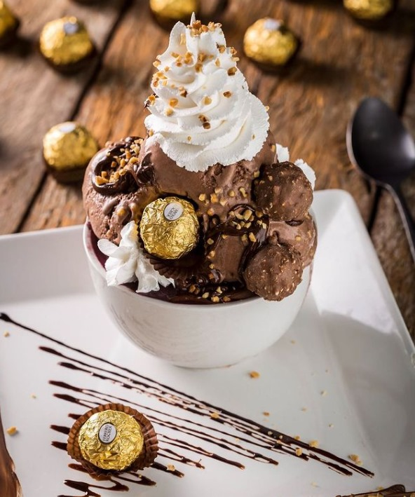

Bem-vindo à Nossa Página
Descrição sobre a página ou empresa.
Mais informações relevantes.
Contato ou outros detalhes importantes.


Convite Especial
Temos um convite especial pra te fazer! Vai rolar um arraiá arretado no CEU da Mumbuca, no dia 21 e 22 de junho. A festa é em comemoração aos 10 anos do Centro de Artes e Esportes Unificados. 🎈🎉 Muitas guloseimas, shows e atividades culturais. Vai ser bom demais da conta! Então, separa logo o chapéu de palha e roupinha xadrez e vem. Vai às 17h.
Programações:
Sexta-feira, 21/06
- 17H – BANDA CULT
- 18H30 - FANFARRA DAS ARTES
- 19H - ABERTURA DO CORDEL, TEATRO DE MUSICA
- 19H - ORQUESTRA MARICA DAS ARTES
- 19H – BAIÃO DE BIGUA
- 19H15 – APRESENTAÇÃO QUEBRA NOZES
- 19H20 – APRESENTAÇÃO DO TEATRO MUSICAL MARICÁ DAS ARTES: “O REI LEÃO”.
Sábado, 22/06
- 17H – ABERTURA COM CORDEL, TEATRO E MÚSICA
- 17H10 - SAMBA LAIÁ
- 17H45 – LEO FÉLIX, COM APRESENTAÇÃO DE SAMBA E BOLEIRO
- 18H – QUINTETO ABACATEIRO
- 19H – BAIÃ DO BIGUA
- 20H – QUADRILHA RAINBOW

Curta Itaocaia
Prepare-se para uma aventura rural cheia de diversão! Neste domingo (5), o ‘Curta Itaocaia’, agita o Itaocaia Valley, no coração rural de Itaipuaçu. Às 10h, começa a festa, prometendo uma experiência campestre inigualável aos visitantes e moradores locais, incluindo uma variedade de delícias típicas e apresentações musicais em diversos pontos do evento. 😋 🎶 O circuito inclui uma parada 'obrigatória' na histórica Fazenda Itaocaia, onde haverá uma feira de artesanato e visita às instalações e à exposição permanente “Caminhos de Darwin”.

Art & Bier
Sabores gastronômicos deliciosos, vibes musicais contagiante e festas memoráveis aguardam por você! A comunidade e os visitantes já aprovaram — o Art & Bier voltou para mais uma edição incrível! Novo local: Araçatiba! Encontre-nos na Rua Jovino Duarte, S/N. Venha fazer parte dessa experiência única! O evento iniciará de 16h00 a 00h00 na quinta e na sexta, de 14h00 a 00h no sábado e de 14h00 às 23h no domingo!

Pedacinho do Céu
Muita música boa em um palco flutuante na lagoa e o pôr do sol mais bonito de Maricá ao fundo: o Pedacinho do Céu voltou nesta quinta (4), no Deck Pôr do Sol, em Araçatiba, e rola até 7 de abril. A edição, a primeira de 2024, vai homenagear artistas e canções dos anos 80 e 90. A partir das 15h.

Os Pagodes que a Gente Gosta
Os pagodes que a gente gosta chegaram na casinha mais charmosa de Maricá! Neste sábado, o cantor RENAN OLIVEIRA chega com a roda de samba com mais de 2 milhões de views do YouTube, o pagode que está quebrando tudo por onde passa: os pagodes que a gente gosta. E o esquenta começa cedo, vai rolar também o cantor Rafael Caçula e nosso residente Dj Waguin, a partir das 20 horas. Reservas e informações por WhatsApp: (21) 9 99942873. 📍Rua Álvares de Castro, 173 — Centro, Maricá. ✅Camarotes à venda, consulte a disponibilidade por nosso WhatsApp ou por direct! Todos os valores são sujeitos à alteração sem aviso. Valor referente a cortesias mediante o número de convidados presentes na casa.
Locais

Arcafé
Venha conhecer nossa aconchegante cafeteria, o refúgio perfeito para seus momentos de relaxamento e prazer. Imagine-se em um ambiente acolhedor, decorado com bom gosto e repleto de charme, onde a música ambiente suave convida a uma pausa tranquila do agito do dia a dia. Desfrute dos nossos cafés especiais, preparados com grãos selecionados e um toque de carinho, acompanhados por uma seleção irresistível de doces e quitutes deliciosos. Seja para um encontro com amigos, uma leitura tranquila ou apenas um momento para apreciar as pequenas coisas da vida.

Bora Bora
Descubra a experiência gastronômica única no nosso restaurante à beira da lagoa, onde sofisticação e beleza natural se encontram. Desfrute de uma vista deslumbrante enquanto saboreia pratos refinados, preparados com os ingredientes mais frescos e uma pitada de criatividade. Perfeito para um jantar romântico, uma celebração especial ou um almoço relaxante, nosso restaurante oferece um ambiente elegante e acolhedor. Venha e permita-se viver momentos inesquecíveis com a combinação perfeita de sabores extraordinários e uma paisagem de tirar o fôlego. Reserve sua mesa e faça parte desta experiência memorável.

João João
Bem-vindo ao seu destino gastronômico no coração da cidade! Nosso restaurante no centro é um verdadeiro convite para uma experiência sensorial única. Em um ambiente sofisticado e acolhedor, você será recebido com pratos que mesclam tradição e inovação, preparados com os ingredientes mais frescos e de alta qualidade. Seja para um almoço de negócios, um jantar romântico ou uma celebração especial, oferecemos um cardápio variado que agrada a todos os paladares. Além disso, nosso atendimento impecável garante que cada visita seja memorável. Venha nos conhecer e deixe-se surpreender pela excelência e sabor.

Alexandre Restaurante
Venha experimentar o sabor irresistível no restaurante mais gostoso! Nosso restaurante é o lugar perfeito para os amantes da boa comida. Oferecemos um ambiente ideal para refeições em família ou encontros com amigos. Nosso cardápio possui pratos deliciosos preparados com ingredientes frescos e de alta qualidade. Estamos ansiosos para te receber de braços abertos! 📱(21) 96474-5934 WhatsApp. 📍 Rua 85, L 14, Q 134. Araçatiba, Maricá – RJ.
Tigelas
Com um ambiente elegante e acolhedor, convidamos você a saborear nossas combinações exclusivas e cuidadosamente elaboradas. Cada tigela de açaí é preparada com ingredientes premium, acompanhamentos variados e toppings que vão do tradicional ao sofisticado, criando uma explosão de sabores e texturas. Perfeita para um lanche saudável, um encontro entre amigos ou um momento de indulgência, nossa açaíteria oferece uma experiência gastronômica que vai além do comum. Venha nos visitar e descubra o verdadeiro sabor do açaí gourmet!
Conteúdo das Informações Gerais
Conteúdo dos Detalhes do Projeto
Conteúdo da Equipe